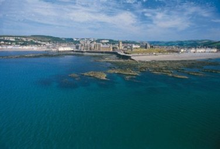

Aberystwyth Old Students’ Association

History
The Association was founded in 1892 and, over a century later, it has more than 9000 members spread all over the world, united in their affection for this historic and much loved University by the sea.
Throughout its history the Association has supported the University and has been a point of contact for maintaining and re-forging the friendships made between students. Today these aims are continued in social events, fund raising efforts and active promotion of Aberystwyth University to the wider world, particularly those who might wish to study here. There are branches of the OSA throughout the UK and overseas, working hard to provide bursaries and scholarships, making sure that wherever possible there is an Aber contact to give a friendly welcome to Aber graduates and to nurture the Aber spirit at social events.
Membership
Membership of the OSA has included some of the most prominent Aberystwyth alumni, and we are very proud of the success of our members. Life membership is open to all former students and staff of Aberystwyth University (formerly the University College of Wales, Aberystwyth and University of Wales, Aberystwyth).
If you would like to join this respected and historic Association, life membership is available for £20 – please visit the OSA website for further details.